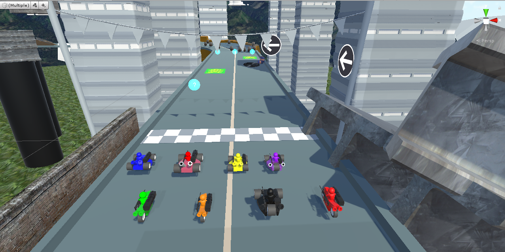
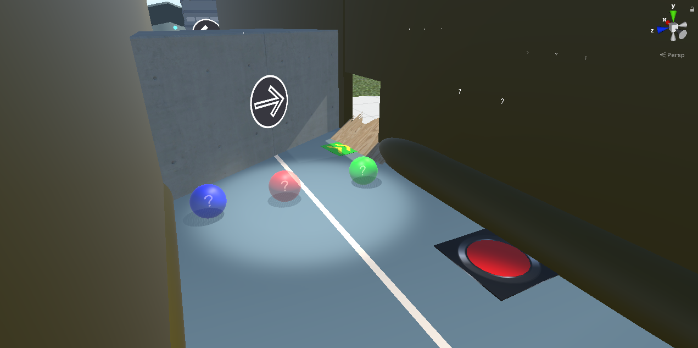

Gameplay Breakdown
A moment-to-moment breakdown of design decisions in the level.
This project was made as a Game Jam in class.
This was made over the course of 6 weeks, back in November 2019.

#1 Start Line
You begin on the starting line, and the game counts down 3, 2, 1.
This version of the game is 1 Player vs 7 AI enemies.
#2 Introducing Items
The first section of track is deliverately a straight-away.
A Red Item Box is directly in your path, so you will most likely hit it.
The Item will spawn on your HUD, and you can use it.
#3 Introducing Boosts
You will also drive over a boost pad, which is marked on the ground in green, with arrows pointing forward.
Your car will boost with speed and a sound will play to cue that boosting is happening.
#4 Introducing Oil Slicks
On the other side of the road, an oil slick is placed and clearly marked with black oil and barrells.
Driving over a slick will cause you to spin out.
Most drivers won't come even close to the slick on their first run, but they will see it.
#5 Oil Slicks
There are two oil slicks on the map.
They're placed in spots that you won't naturally run into on your first lap, but come more into play in the 2nd and 3rd laps.
#6 The 3 Colour Item system
Scattered in a row across the track are blue, red, and green question mark boxes.
Blue boxes give you defensive items.
Red boxes give you offensive items
Green boxes give you boosting items.
Similar to in Diddy Kong Racing, item boxes usually appear in a line this way.
This allows you to pick what kind of item you want for a given moment.
Am I chasing someone where I want a missile or Nova Bomb?
Or do I want a quick burst of speed to cover a gap?
#7 Introducing Barrells
Coming around the corner, there is a corner ramp and barrells scattered over the track.
The barrells roll depending on where people to hit them, so it adds a little bit of varience from race to race.
#8 Introducing Switches
As you turn the corner, a bright red switch is in the middle of the track.
Firing a weapon at the switch will cause the block behind it to fall down.
When the block falls down, that race route is closed off, and a new one is opened up.
#9 Specific Item Boxes
The pink box on the right is a specific item box.
These show the item inside them, and only award that item.
In this case, this awards 10 Bouncer items.
The spawn cooldown is longer on these items.
#10 Alternate Routes
Depending on whether someone shot the red button, the original route may be opened or closed.
The alternate route is a little more challenging, but is faster and has better items.

#11 Obstacles
This portion is another straight away (it's a tutorial track of course) and there are boxes on one side of the track.
Hitting these boxes will slow you down and scatter them across the track.
There were moving obstacles in earlier builds, but were removed for difficulty.
#12 Ramps
Coming around the corner, there is a ramp with a boost pad.
It will shoot you up to a higher area of track, with a Nova Bomb Item at the end.
The higher section of track avoids the wooden obstacles.
#13 Jumpable Obstacles
On this section, wood blocks are placed across the track, and can be jumped over.
A large readout "Jump" tells the player to jump over them.
The obstacles are small enough that they're fairly easy to jump over, and colliding into one only causes you to spin out briefly.
#14 Missile Item
The red bubble with a Missile inside gives you the Missile item.
It's a tracking Missile with some aim assist.
It requires line of sight to use.
#15 Nova Bomb Item
On the top path, there is a Nova Bomb Item.
Nova Bombs are powerful tracking items that knock back everyone in it's way for a brief period.
They spawn rarely, given their power.
#16 Red Switch
At the end of this section is another red switch.
Driving over it will cause a large beam to fall down on the track.
The beam will knock back karts in it's path.
This object pulls itself back into the air after a while and can be used again.
#17 Bounce Pads
Coming around the corner, the yellow cubes are bounce pads.
They help easy tight turns and can bounce you a little off the wall.
They're not too strong in this level, since we're just introducing them.
#18 Tunnel
Here we enter a tunnel.
There's a ramp on the right side, some item boxes, and another red switch.
#19 Red Switch
This red switch will drop a large block that closes off this route of the track.
Players will be forced to take the right side path outside.
#20 Oil Slick
Further down the tunnel is a ramp, and oil slick and an oil item.
By driving off the ramp, you can collect the oil slick item.
If you drop it right away, you've made a difficult path for the person behind you.
#21 Last Turn
Coming around the corner is the final section of the track.
There are bounce pads to ease the turn, and a large ramp is coming up.
#22 The Big Ramp
This ramp is alot bigger than most ramps, and has more boost power than normal.
It's meant to be a final push to the finish line.
You can also use it to aim where you'll land in the next lap.
#23 Second Lap
Now, you're back at the starting line, and the basics of the game have been taught.
2 more laps to go!
#24 Alternate Route #1
If the red switch is activated, the large block will fall and an alternate route is opened up.
It's a more challenging path, but it's faster and has more items.
The block falls at and angle that will guide you towards the new route, even if you don't steer.
#25 Concrete Barriers
This route has a barrier on the right side so you don't immediately fall off.
Concrete barriers are placed on the track, that you'll want to avoid.
#26 Pitfalls
This section has pitfalls.
Falling off the track will cause you to need to be pulled back on, and you'll lose some time.
#27 Straight-away Ramp
If you navigate this section, you'll be rewarded with a boost and an item as you're shot back onto the main map.
This is also a good time to use an item and try to knock an enemy off the edge.
#28 Back to the Track
Driving off the ramp brings you back to the main track.
Getting to the end and driving off basically guarantees safely landing back on the track.
#29 Falling Beam
If drive over the red switch, this is where the beam will fall.
It's in the way enough that it'll slow drivers down, but it won't throw them off the edge.
You'll hear a loud thud when it falls.

#30 Alternate Route #2
If you activate this switch, the block will fall and force everyone to the new route.
The ramp and block are angled so you will take this route automatically and not be halted to a stop.
#31 Ramp to Alternate Route #2
Again, alternate routes are more difficult and have less protection on the sides.
You'll want to boost through this platform to the next section.
#32 Item Choice
Again, you'll get to choose between a speed boost, a defensive item, or an offensive item.
And if you angle yourself right, you'll hit the boost and an item box.
#33 Climbing the Beams
Again, you'll climb an open-sided beam that leads to the next section.
You'll have the choice to grab an item that you want.
#34 Straightaway
Another straightaway that's rather steep.
You can see the items ahead, but not the track past the hill.
#35 Up the Ramp
Driving off the ramp you'll have to drive between two concrete blocks that you'll want to angle correctly.
It is slightly possible to fall off here.
#36 The Titled Track
This corner of the track is titled, and you'll want to be sure you don't fall off.
#37 Titled Area with Guiderail
Here you'll drop into another tilted section, but there is a guiderail at the bottom.
#38 Shooting into the Boxes
You'll come around another tight corner, and you'll want to angle your kart so you don't drive into the wall on the next platform.
#39 The Box Section
The box section is sloped down and has an angled wall which you'll want to avoid.
#40 Final Stretch
You're coming back to the track.
This section will drop you right onto the finish line.
Although it looks dangerous, the colliders for getting back on are pretty generous.
Thanks for Reading!
Thanks for reading.
This tutorial track was meant to introduce the basic concepts of the game,
and have some variation in the map so laps could play differently.
If you want to learn more, you can download and play the game on Github!